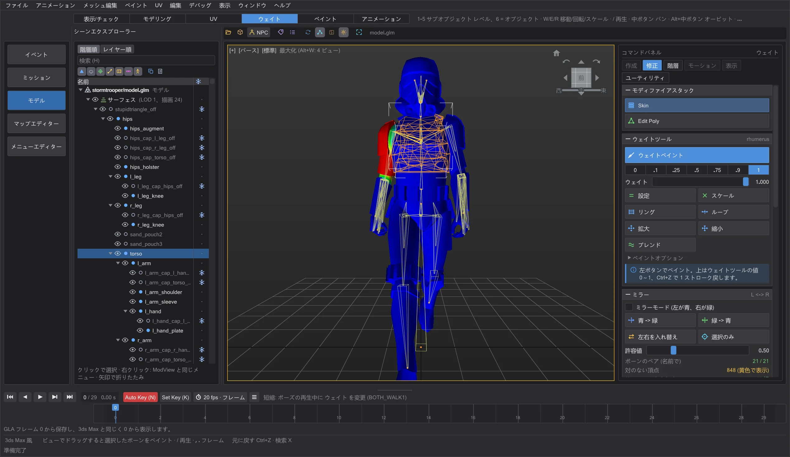
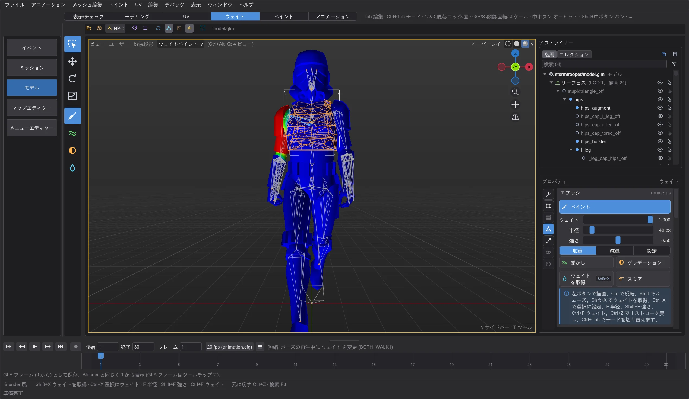
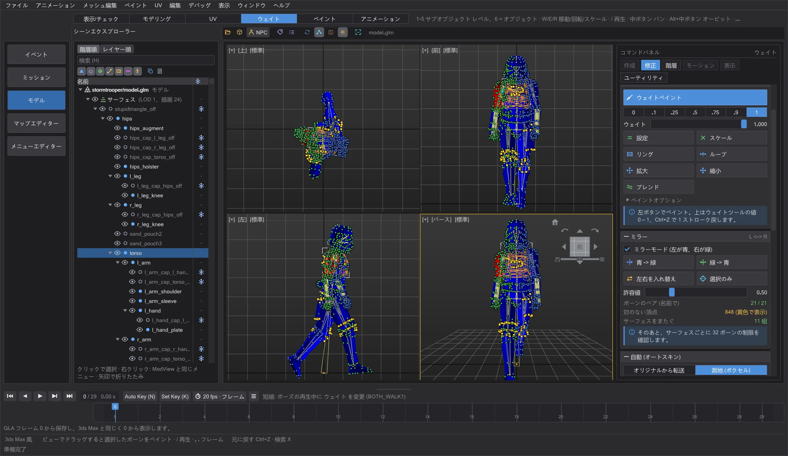

モデルタブ: Weights
アニメーションを再生したまま、モデルのボーンウェイトをペイント・編集します。操作モードに応じて 3ds Max または Blender の道具を使います。サーフェスをまたいで片側をもう一方にミラーし、ボーンをロックし、モデルがゲームの制限に収まるかをいつでも確認できます。
右のパネル#
シーンエクスプローラまたはグループ ボーン でボーンを選びます。モデルはそのウェイトを青 (0) から赤 (1) で表示し、ボーンが見えるようになります。3ds Max 風では、コマンドパネルの修正タブに モディファイアスタック、ウェイトツール、ミラー、自動 (オートスキン)、ボーン、JKA の制限 と、閉じた状態の 詳細パラメータ が並びます。Blender 風では、プロパティエディタのデータタブに ブラシ、オプション、クリーンアップ、ミラー、自動 (オートスキン)、ボーン、JKA の制限 が並びます。どの機能も、すべてのアクションの検索 (X、Blender 風は F3) とビューの右クリックの ウェイトツール にもあります。


ペイント#
メインボタン ウェイトペイント (Blender 風: ペイント) でペイントをオン・オフします。オンでは左ボタンで選択したボーンのウェイトをペイントし、オフでは左ボタンが選択になります (頂点レベル (1) で頂点を選択)。選択に働く道具のためです。ブラシは加算・減算・スムーズ・設定を行います。Blender と同じく グラデーション (線をドラッグ: 始点はウェイト全体、終点はゼロ、リニアまたは放射状) と スミア (ブラシの動きに合わせてウェイトを引きずる) もあります。3ds Max 風では、これらと半径・強さ・ペイント時のミラーは ペイントオプション の下にあります。自動正規化 (3ds Max 風: 正規化、最初からオン) では、頂点のウェイトの合計が常に 1 になります。ペイントしたボーンは値を保ち、ほかのボーンが残りを分け合います。1 ストロークが元に戻す 1 回分です。
Blender 風では Blender のウェイトペイントのキーが使えます: Ctrl を押しながらのストロークは減算、Shift でスムーズ。Shift+X でマウスの下のウェイトを取得 (ウェイトを取得)、Ctrl+X で選択に設定。F、Shift+F、Ctrl+F で半径・強さ・ウェイトをドラッグし、クリックで確定、Esc か右クリックで取り消します。
ウェイトツールとクリーンアップ#
3ds Max の Weight Tool と同じです。ペイントがオフのとき、固定値 0～1 は選択したボーンのウェイトを選択した頂点にすぐ設定します。スケール はスケール係数 (最初は 0.95) を掛け、ブレンド は選択した頂点を隣の頂点になじませ、リング、ループ、拡大、縮小 は選択を広げたり狭めたりします (リングとループは四角形の上を進みます。三角形のメッシュはそのために四角形に組み合わせますが、モデルは変更しません)。Blender のクリーンアップコマンド - すべて正規化、クリーン、全ボーンのスムーズ、制限: 4 - はすべての頂点に、頂点を選択しているときは選択した頂点に働きます。3ds Max 風では 詳細パラメータ に すべて正規化、ゼロウェイトを削除、ボーン影響の上限: 4 として並びます。同じ位置にある頂点 (UV の継ぎ目や 2 つのサーフェスの境目) は常に同じウェイトになるので、動かしてもメッシュが裂けません。
3ds Max のスキン モディファイヤと同じ頂点: ウェイトツール グループに *選択: 頂点、要素を選択、背面頂点をカリング* があり、頂点をクリックまたはドラッグで選択、Ctrl で追加、Alt で除外します。リストには各ボーンと選択頂点のウェイト (複数なら平均) が並び、ボーンをクリックして値を入力するか .1/.25/.5/.75/.9/1 を使います - 合計は 1 のままです。コピー・貼り付け・位置で貼り付けで頂点間のウェイトを写し、ウェイト テーブル (ドッキング可能) は頂点 × ボーンを一覧し、ミラー貼り付けは選択頂点を左右のボーンを入れ替えて反対側へ写します。ペアは ボーンのペア にあります。Blender 風では 頂点ウェイト パネルに同じリストがあります。ウェイト ペイントはツールの 1 つで、保存はゲームの形式 (4 ウェイト、10 ビット) のままです。
ミラー#
ボーンは名前で (lhumerus と rhumerus)、頂点は位置でペアにします。サーフェスをまたぎます - JKA では左腕と右腕は別々のサーフェスです。グループの表には、ボーンのペア、対のない頂点、互いにミラーになるサーフェスが表示されます。許容値 は、対になる頂点がミラー位置からどれだけ離れてよいかです。3ds Max 風では、ミラーモード (左が青、右が緑) がビューで頂点に印を付け (黄色: 対がない)、青 -> 緑 と 緑 -> 青 が片側をもう一方にコピーし、左右を入れ替え が左右を入れ替え、選択のみ がこの 3 つを選択した頂点だけに限ります。Blender 風では、グループをミラー が選択したボーンを、すべてのグループ がすべてのボーンをミラーします (ウェイトをミラー と 名前を入れ替え (L<->R))。頂点を選択していなければ左右が入れ替わり、選択していれば選択した側がもう一方を受け取ります。トポロジーミラー は、左右の作りは同じでも位置が正確に対称でないとき、メッシュの構造から対を探します。ミラーのあと、ゲームが読む数 (32) より多くのボーンを使うようになったサーフェスがあればメッセージに表示されます。

ボーン、ロック、ゲームの制限#
グループ ボーン には、選択したボーンとポーズ (シーケンスとフレーム) が表示されます。作業中もアニメーションは再生し続けます。ロック は選択したボーンをロックします。ブラシもコマンドもそのウェイトを変更せず、正規化はそのボーンを避けて働きます。ロックしたボーンは、解除用の x が付いたリストで表示されます。ロック (Blender 風: K) は、すべてのボーン、選択したボーン、それ以外をロックまたは解除するメニューを開きます。ボーンを表示 はビューのボーン表示を切り替えます。このエリアでは最初からオンです。グループ JKA の制限 は、ゲームが読む内容をバーで表示します: サーフェスごとの頂点とボーン (選択したサーフェス、なければ制限に最も近いサーフェス) と、1 頂点あたりの最大ウェイト数。適用 (ウェイト 4 つ, 正規化) は、ペイントしたウェイトをゲームが読む形でモデルに書き込みます: 大きい 4 つ、正規化、10 ビット。
保存、詳細レベル、ペイント中の Ctrl+Z#
ペイントリストが開いたまま(ペイントやこのエリアのコマンドの後、適用 (ウェイト 4 つ, 正規化) の前)でも、保存するとビューに表示されているウェイトが書き込まれます。ファイルにはポーズに表示されている頂点ごとの 4 つのウェイトが、ゲームが読む形に正規化されて入り、ペイントリストは続けて塗れるよう開いたままです。保存前のチェックとモデリングの JKA 制限も同じものを測ります。選択したサーフェスのみ と あとでミラー では、オートスキンは選択したサーフェスにだけミラーします。片方の腕をもう片方にミラーするには両方を選択します。
ペイントとこのエリアのコマンドは表示中の詳細レベルに適用されます(自動 ではズームに従います)。ほかのレベルはウェイトを保ちます。すべてのレベルにウェイトを付けるのはオートスキンだけです。ストローク、グラデーション、ドラッグ、ツールボックスが開いている間は、ホイールでズームしてもビューは開始時のレベルを保ち、新しいレベルは離した後に切り替わります。頂点・エッジ・ポリゴンの選択はそのレベルに属します。レベルが変わると選択は空になり、ビューがそのレベルに戻り、その間にそのレベルのメッシュが変更されていなければ元に戻ります(ウェイトのペイントは数えません)。マウスボタンを押したまま Ctrl+Z を押すと、開いているストローク、グラデーション、ドラッグを終えて元に戻します。Ctrl+Y でやり直せます。